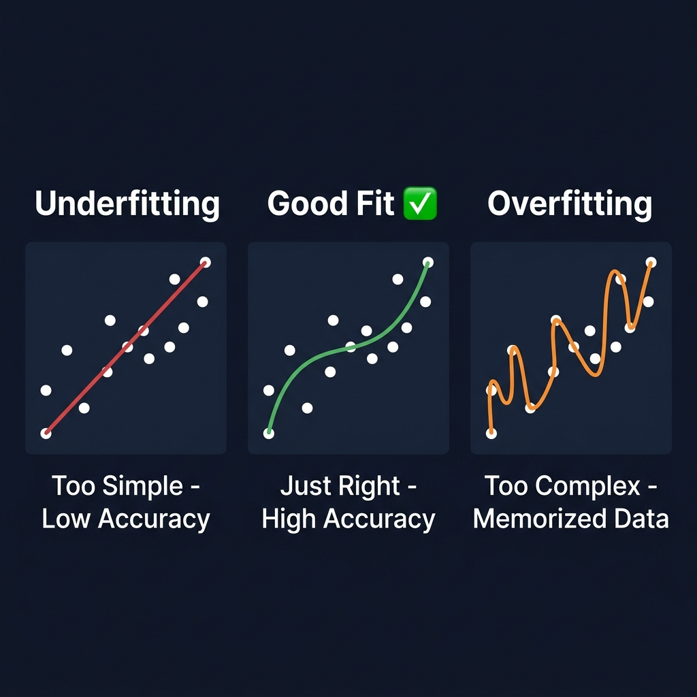
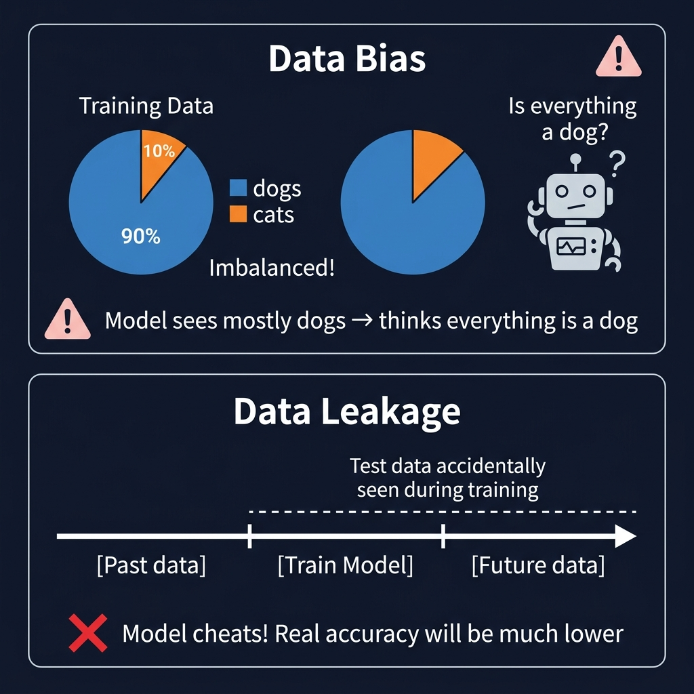

مشاكل البيانات الشائعة Common Data Problems & Pitfalls
هذه المشاكل قد تدمر نموذجك Model حتى لو كان التدريب Training يبدو ناجحاً. تعلّم كيف تتعرف عليها وتتجنبها.
١. الإفراط في التعلم Overfitting
النموذج "يحفظ" Memorizes بيانات التدريب بدلاً من أن يتعلم الأنماط العامة General Patterns. نتائج ممتازة على التدريب لكن سيئة على بيانات جديدة New/Unseen Data.

📊 مخطط توضيحي — الفرق بين Underfitting والتوافق الجيد والـ Overfitting Underfitting / Good Fit / Overfitting Comparison
مثال: طالب حفظ 200 سؤال امتحان سابق حرفياً. لو جاء نفس السؤال يحله فوراً (= Training Accuracy 100%). لكن إذا صيغة السؤال تغيرت قليلاً ← لا يعرف يحله (= Test Accuracy 40%). المشكلة: حفظ بدون فهم!
كيف تكتشفه؟ How to Detect?
Training Loss ينزل ← لكن Validation Loss يبدأ بالارتفاع. الفجوة Gap بينهما تزداد.
كيف تعالجه؟ Solutions
- ✅ زيادة بيانات التدريب More Training Data أو استخدام Data Augmentation
- ✅ تقليل تعقيد النموذج Simpler Model Architecture
- ✅ Early Stopping — إيقاف التدريب عندما يبدأ Val Loss بالارتفاع
- ✅ Dropout — إطفاء عشوائي لبعض الخلايا العصبية Neurons أثناء التدريب
- ✅ Regularization (L1/L2) — إضافة عقوبة على الأوزان الكبيرة
٢. قصور التعلم Underfitting
النموذج لم يتعلم كفاية Hasn't Learned Enough. نتائجه سيئة حتى على بيانات التدريب Training Data نفسها.
مثال: طالب ذاكر 5 دقائق فقط للامتحان. لا يعرف يحل أي سؤال — لا من الكتاب ولا أسئلة جديدة. ببساطة لم يدرس كفاية!
الحلول Solutions:
- ✅ زيادة عدد Epochs
- ✅ استخدام نموذج أكبر وأعقد Larger Model Capacity
- ✅ التأكد من جودة البيانات والتوصيف Data & Label Quality
- ✅ تعديل Learning Rate — قد يكون صغيراً جداً
٣. عدم توازن البيانات Data Imbalance / Class Imbalance
عندما تكون فئة Class أكثر بكثير من الباقي. النموذج يصبح متحيزاً Biased للفئة الأكثر ويتجاهل الأقل.

📊 مخطط توضيحي — تحيز البيانات والتسريب Data Bias & Data Leakage
مثال: نظام كشف احتيال بطاقات ائتمان: 99.9% من المعاملات طبيعية و0.1% احتيال. النموذج يتعلم يقول دائماً "طبيعي" ← يحصل 99.9% دقة Accuracy بدون ما يكتشف أي احتيال فعلياً! هذا Accuracy Paradox.
الحلول Solutions:
- ✅ Oversampling — تكرار عينات الفئة القليلة (مثل SMOTE)
- ✅ Undersampling — تقليل عينات الفئة الكثيرة
- ✅ Class Weights — إعطاء وزن أكبر للفئة القليلة في Loss Function
- ✅ جمع بيانات إضافية Collect More Data للفئة الناقصة
- ✅ استخدام مقاييس مناسبة: F1-Score بدلاً من Accuracy
٤. التحيز Bias in Data & Models
عندما تكون البيانات غير ممثلة للواقع Not Representative of Reality، النموذج يتعلم أنماطاً خاطئة أو يفضل مجموعة على أخرى.
مثال شهير: نظام تعرف على الوجوه دُرِّب بأغلبية وجوه أوروبية. عند استخدامه على وجوه أفريقية أو آسيوية ← أداء سيء جداً! لأنه متحيز Biased لنوع البيانات التي رآها أكثر.
أنواع التحيز Types of Bias:
البيانات لا تمثل كل الحالات الممكنة (مثال: صور نهارية فقط = لا يعمل بالليل)
الشخص المُوصِّف ارتكب أخطاء أو كان متحيزاً في قراراته
اختيار بيانات تؤكد فرضية الباحث فقط وتجاهل البيانات المعاكسة
٥. تسريب البيانات Data Leakage
يحدث عندما تتسرب معلومات من بيانات الاختبار Test Set إلى بيانات التدريب Training Set. النتائج تبدو ممتازة لكنها مزيفة Artificially Inflated!
هذه أخطر مشكلة Most Dangerous Problem لأنها تعطيك False Confidence — تظن النموذج ممتاز لكن في الواقع Production أداؤه سيء!
مثال: عندك 100 صورة أشعة لمريض واحد. قسمتها عشوائياً: 80 للتدريب و20 للاختبار. النموذج لا يتعلم تشخيص المرض — بل يتعلم التعرف على المريض نفسه! لأن صور نفس الشخص في المجموعتين.
كيف تتجنبه؟ Prevention
- ✅ قسّم البيانات قبل Before أي معالجة Preprocessing أو تضخيم Augmentation
- ✅ تأكد من عدم تكرار نفس المصادر No Source Overlap بين المجموعات
- ✅ استخدم Group-based Splitting — كل مجموعة بيانات من نفس المصدر تذهب كلها لمجموعة واحدة
- ✅ Cross-Validation — التحقق المتقاطع لاكتشاف التسريب
٦. تسميات خاطئة Noisy Labels / Mislabeled Data
عندما تكون التسميات غير دقيقة Inaccurate Annotations. النموذج يتعلم معلومات خاطئة Learns Wrong Patterns!
مثال: في داتاسيت حيوانات، 50 صورة "كلب" مُصنَّفة بالخطأ كـ"قطة". النموذج يتعلم أن بعض الكلاب = قطط ← عند الاختبار يخلط بينهم. جودة التوصيف Label Quality تؤثر مباشرة على جودة النموذج!
٧. قلة البيانات Small Dataset / Insufficient Data
إذا بياناتك قليلة جداً، النموذج لن يتعلم أنماطاً Patterns كافية للتعميم Generalization.
تعديل الصور الموجودة لإنشاء نسخ جديدة (قلب، تدوير، تكبير)
الاستفادة من نموذج مُدرَّب مسبقاً Pre-trained Model
من Kaggle, Roboflow, Google Images
إنشاء بيانات بالكمبيوتر باستخدام GANs أو 3D Rendering
📋 ملخص المشاكل والحلول Summary: Problems & Solutions
| المشكلة Problem | العلامة Symptom | الحل Solution |
|---|---|---|
| Overfitting | Val Loss يرتفع | Augmentation, Early Stopping, Dropout |
| Underfitting | كل Loss عالي | المزيد من Epochs أو نموذج أكبر |
| Imbalance | فئة مسيطرة | Oversampling, Class Weights |
| Bias | أداء سيء على بيانات مختلفة | تنويع البيانات Diverse Data |
| Data Leakage | نتائج مثالية لكن أداء واقعي سيء | Split Before Processing |
| Noisy Labels | نتائج غير منطقية | مراجعة التوصيف Label Review |
مبروك! أكملت الدليل الشامل Congratulations!
الآن تمتلك المعرفة الأساسية Foundational Knowledge لفهم أي مشروع ذكاء اصطناعي. ارجع لأي فصل وقت ما تحتاج!
→ العودة للصفحة الرئيسية